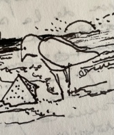

Refaire le Puzzle à partir du réel
Celui d'une planète « Terre » engagée dans un système de transformation physico et bio-chimique de longue date. Une planète « abri » d'un processus d'évolution et transformation incessant : « le Vivant », et au sein de cette communauté complexe, une Espèce qui n'a pour raison d'être que de s'associer aux autres en comprenant et pratiquant la langue commune d'une « Co-évolution », tout en contribuant à assurer les conditions d'un maintien durable du système écosphérique ambiant.
Le propos à la fois historique, économique, social, politique, biotique, technique, spatial, architectural… est une interrogation sur la sortie d'un système multimillénaire « Civilisant ». Un modèle qui entreprend de très longue date une œuvre de marginalisation de l'Espèce sur le socle planétaire par une entreprise, d'accaparement du sol planétaire, d'éradication ou domestication de « l'autre Vivant », de dégradation croissante de la Biosphère, de détérioration ou épuisement des ressources abiotiques et physiques, de dérèglement du climat terrien, et plus récemment d'un engagement à formater le cognitif humain « inventif » en Intelligence-Artifice…
Le présent Essai relate le concret des initiatives, écologiques et sociales prises ces dernières décennies en Europe. Des initiatives le plus souvent développées à l'échelle des proximités par des groupes engagés à définir et expérimenter un champ de concepts de vie sur les inter-compatibilités de notre Espèce avec le Vivant Terrien. Ces pratiques de vie, à faible empreinte voire en « empreinte écologique effaçable », associées à une conception « Frugale » de l'existence, dans le cadre de la mise en œuvre d'une Éco-Étho-politique des milieux de vie en biosphère, par étapes conduisent à réviser les usages et fonctions des établissements produits, et développer des concepts spatiaux d'installation : en mutualité, géo-biocompatibilité, itinérance et « Mérizotopie ».
La démarche ici menée consiste à interroger le « Temps long » historique à la façon des Amérindiens du Chiapas « Regarder vers l'arrière pour avancer vers l'avant », pour aborder le système sociétal humain sur un espace-temps commençant de la formation du Tribut, puis du Profit, et poursuivant son œuvre sur ces deux derniers siècles en se consacrant tout à la fois : à la dégradation accélérée de la biodiversité ambiante et à la modification des paramètres climatiques de la planète, jusqu'à créer une « Ère numérique » pour développer un processus de capture des savoirs humains visant à faire place à une « Intelligence-Artifice » algorithmique…
Le contexte accidentogène présent fournit l'occasion de s'interroger sur des alternatives au modèle systémique suicidaire qui se découvre. Des alternatives soucieuses de trouver une compatibilité d'existence et d'évolution de l'Espèce avec la « Terre-Mère », pour se départir des modèles néo-civilisateurs attachés à rechercher la fabrication d'un « l'Être cosmique » avatardisé.
Dans le contexte présent tout à la fois écocidaire et génocidaire, certains groupes humains s'attellent sur les Continents à élaborer des formes concrètes « d'Alternatives » portant sur les formes de séjours d'un « Commun humain » multiculturel en éco-compatibilité, voire constituent des formes d'existences co-évolutives avec l'ensemble du monde du Vivant Biosphérique… C'est ce que nous avons choisi de relater sur l'Europe en choisissant de présenter : Des réalisations (bâti et aménagements associés) ; le cadre porteur des recherches scientifiques, techniques architecturales qui permet de les développer ; et les dynamiques sociales et culturelles portées par les voisinages auteurs, faiseurs, acteurs déterminés d'un paradigme sociétal « Co-évolutionniste ».
°°°°°°°°°°
Pour contourner l'état ambiant de désinformation détruisant la réflexion de masse, il a été choisi de diffuser cet « Essai » par la voie du Net, et sous le format « Créatives Common » qui permet une actualisation et évolution des données et réflexions, par un échange entre les auteurs, les lecteurs, ou nouveaux contributeurs. Une formule retenue à l'origine du projet qui permet à chaque Internaute : De copier et diffuser librement les travaux ainsi parus (système non-propriétaire) ; de participer à la correction des erreurs éventuelles ; de poursuivre l'apport de données et expériences concourant à populariser les formes de désengagement du modèle politico-financier en vigueur ; et participer ainsi au développement et à la diffusion des voies d'application d'une alternative éco- systémique.
Les Thématiques de changement explorées dans ces pages, s'appuient sur les formes de réinvention de l'espace de vie créées au sein des dynamiques de voisinage (Îlots et Quartiers). La plupart des expériences citées ont été visitées en Nord-Europe, il en existe bien d'autres en Europe et sur les autres Continents qui restent à faire connaitre et rapporter pour montrer qu'il n'y a pas Utopie en la matière mais déjà un changement de voilure.
L'Essai, est un appel à contributions et actions. Il énonce des faits et formule des hypothèses sur l'évolution des formes de vie des Communs Humains co-évoluant avec le Vivant d'ensemble. Il est construit pour être abordé par des Internautes surfant sur une thématique en lien avec l'un des quatre thèmes : SOCIÉTÉ – TERRITOIRE - HUMAIN.S – BIOSPHÈRE. Le mode d'exposé, choisi pour développer le point de vue d'une voie alternative à celle du Capitalocène s'appuie sur des éléments d'enquête et des constats examinés sur le Temps Long Historique.
°°°°°°°°°°°°°°°
Le texte se développe en deux corps. Le premier corps sous l'intitulé « Dans l'épaisseur du temps » ( temps d'installation - temps récents) : Expose les temps durant lesquels se constitue en essais-erreurs le modèle sociétal de « l'Anthropocène », pour aborder ensuite la phase de mise en place du « Capitalisme ». Le second corps relate l'apparition à partir de la deuxième moitié du vingtième siècle d'une impasse sociétale marquée par une atteinte grandissante de l'empreinte humaine sur la biosphère, et le constat d'une dégradation avancée des milieux vivants et géophysiques. Sous la dénomination : « Mérizotopies » sont esquissées des alternatives de sortie de l'impasse vers une société civile engagée dans la collégialité, et sont évoquées des formes d'évolution éco- compatibles entre l'Espèce Humaine et la Planète Vivante , qui pour cette dernière n'est ni à acheter, ni à vendre, ni à détruire, mais à comprendre.
Le « Temps Long »… Après regroupements
communautaires sur des lieux ressources, puis organisation en systèmes
plus denses sous la forme de villages agglomérés, et de regroupements
plus importants (Bourgs), émerge du fait les fractures sociales générées
par l'évolution des formes de production et répartition : la Cité de «
Classes ».
Elle nait en Mésopotamie, vers le 5éme millénaire avant notre ère, à une
époque qui se caractérise par le fractionnement sur deux orientations
des communautés humaines. La première portée par une société de «
l'accumulation » caractérisée par l'accroissement de la productivité et
de l'accumulation de surplus échangeables, et la seconde itinérante en
recherche d'une compatibilité au climat, et d'un équilibre avec le
contexte naturel alentour, mais au développement vite entravé par
l'expansion prédatrice de la première.
Les Sociétés développées durant des millénaires vont sophistiquer de façon croissante le Modèle « d'Appropriation- Domestication-Extermination », jusqu'à engager à la fin du XVIII é siècle une nouvelle mue soutenue par l'accès aux énergies fossiles : Celle d'un développement, invasif et destructeur des milieux physiques et Vivants sur l'ensemble de la planète, soutenu par une croissance exponentielle de la démographie. Plus s'accroît la densité des sites de regroupements et d'échanges contraints, plus les dynamiques de vie commune disparaissent au profit d'un isolement de l'Individu. Tout d'abord ce phénomène apparait dans les modes de production fondés sur le Surplus-Tribut, puis se sophistiquent dans les « sociétés de classes et de spécialisations », et aujourd'hui dans les systèmes à gouvernance numérique. Cette dernière phase semble accentuer la marginalisation de l'Espèce par rapport au Vivant bio-diverse et écosystémique.
La « Voie Alternative », doit instruire l'humain sur les formes de désincarcération, de déconditionnement et dés- addiction des systèmes urbains « Containers », pour lui permettre de se réinventer en des « Communs Génératifs » concevant des modes et formes d'établissements en éco-compatibilité avec la Planète-Vivante. Trépas ou Co- vivance ? L'urgence commande de convaincre le Commun-Humain, grâce aux interconnexions numériques publiques encore en place, à se porter vers le monde biophysique pour co-évoluer vers des formes de mutualisation, de tissage des Mondes Vivants, d'inter-langage, et se placer tout à la fois en reliance avec le Vivant d'ensemble, et en compatibilité avec le système chimico-bio-géophysique du Globe.
Les temps doivent être à l'émergence rapide d'un ensemble Vivant co-évolutif, constitué de multiples communautés écosystémiques, et de communs-humains en découverte, et également « à charge d'entretien » d'une Planète Vivante dans le cadre des lois astrophysiques en vigueur. Le virage récent pris vers les sources d'énergies renouvelables et de nouveaux modes d'accès de l'humain à une l'intercommunication publique à l'échelle monde, offre l'opportunité de voisiner à longue distance, échanger, repenser de nouveaux tissus de vie en « open- collaboration », en s'attachant à retrouver la biocompatibilité de l'Espèce au sein d'une planète matrice du Vivant…
Nous savons collégialement créer ces conditions de vie presque sans empreinte sur les milieux écosystémiques et les voisiner, nous savons vivre en sobriété et faible impact sur la planète, nous savons concilier au sein d'une même unité architecturale l'intime et le collectif, nous savons utiliser les ressources renouvelables nécessaires à nos vies, et ne pas les épuiser, nous savons protéger les autres espèces du vivant biosphériques… Mais notre philosophie productiviste anthropo-systémique ne nous a pas conduit à trouver une langue, un codage inter-espèces…
Une erreur d'aiguillage ?